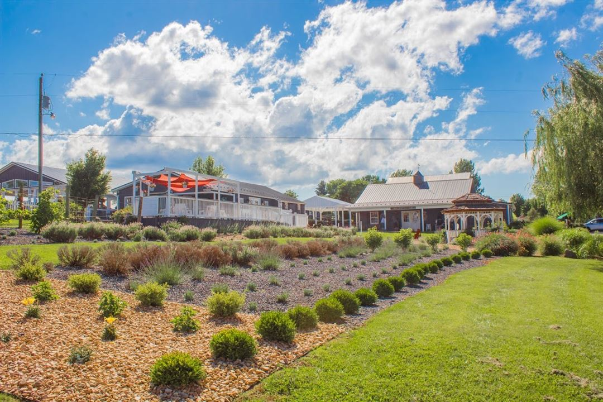
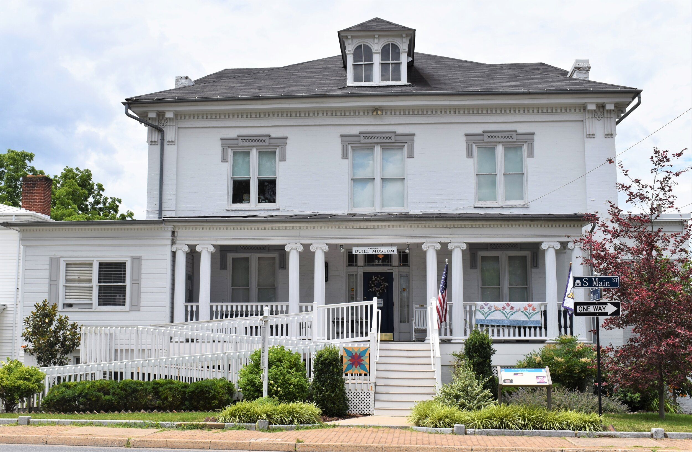
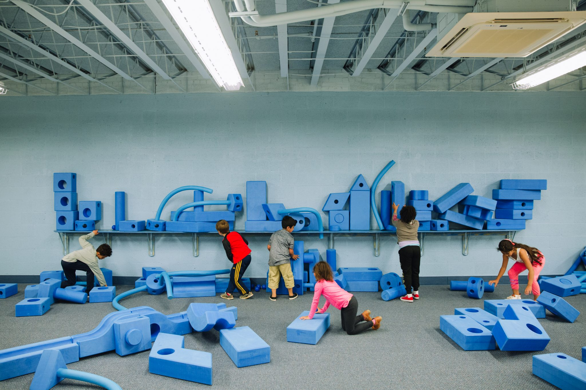
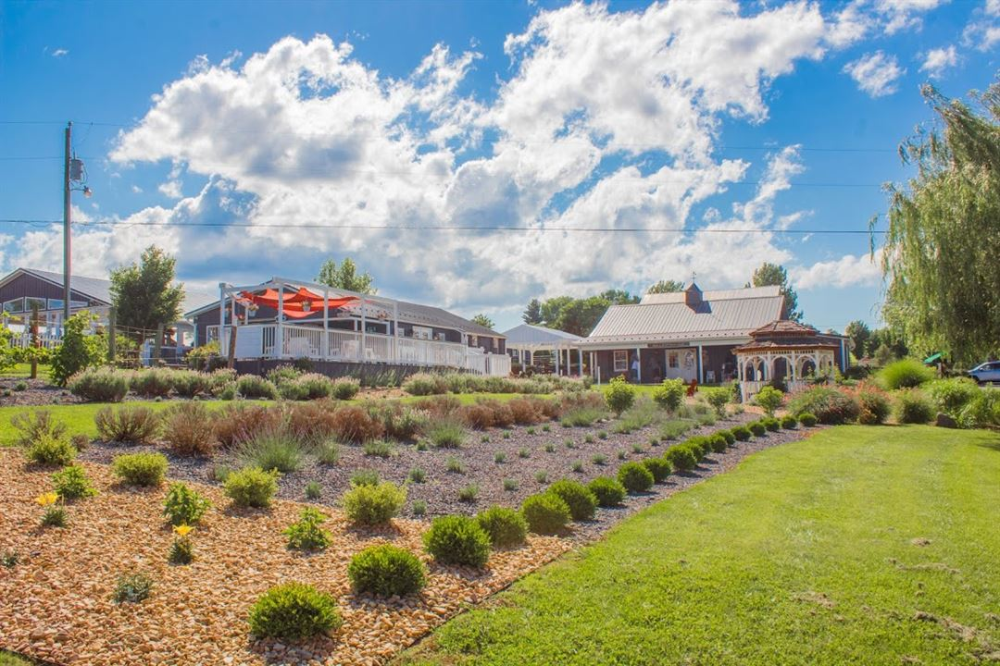
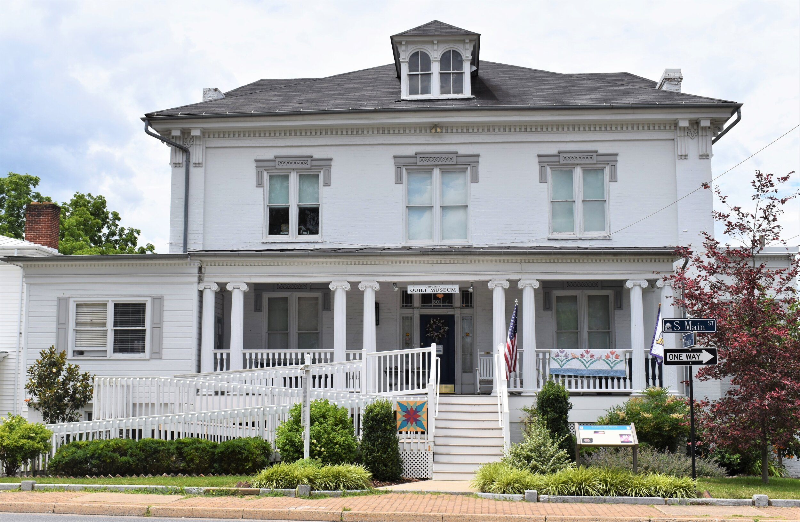
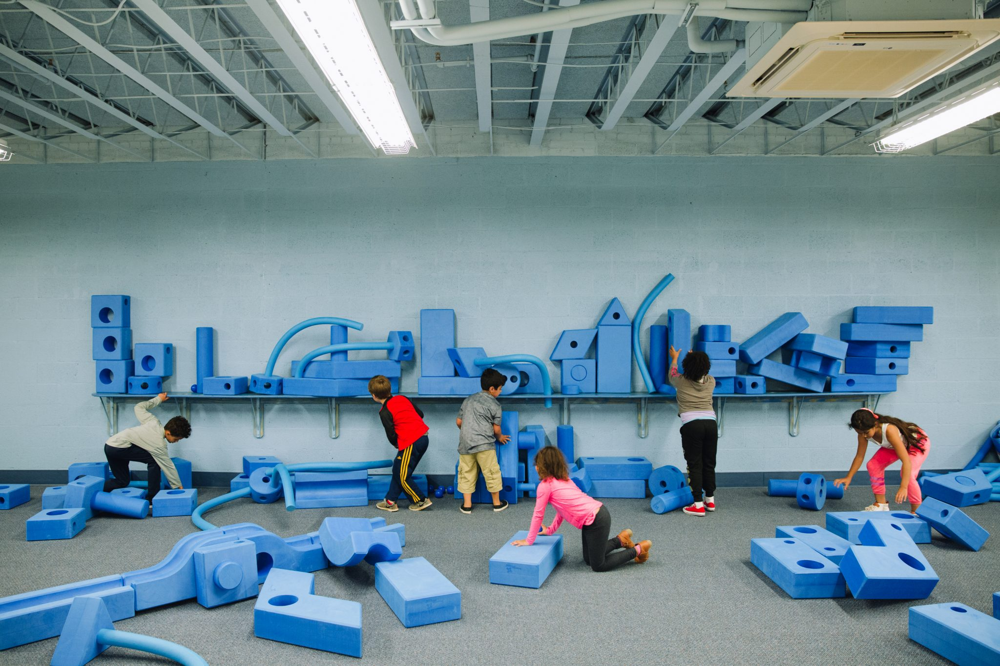
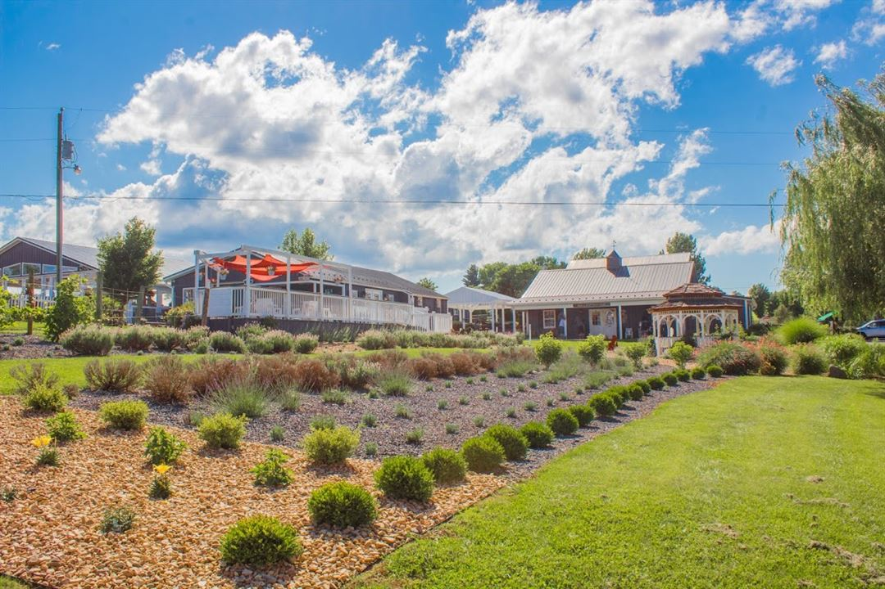
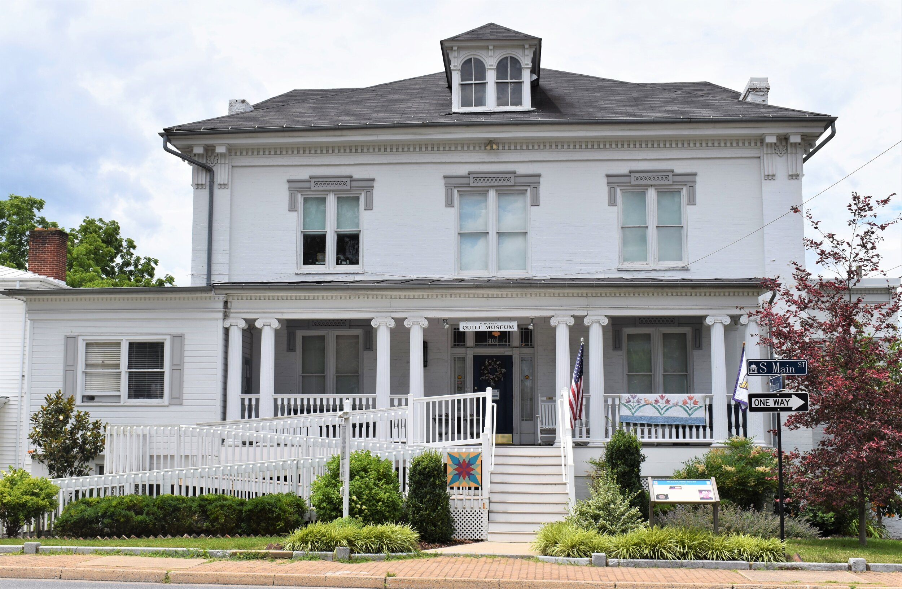
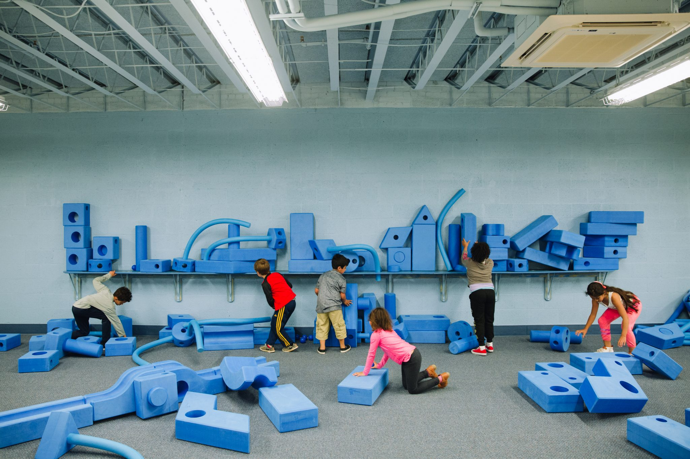

Harrisonburg, VA has tons of local attrications in and around the city provide entertainment for anyone visiting the area. One of my personal favorite attractions is the Edith J. Carrier Arboretum. The arboretum is 125 arces of botenical gardens with 3 miles of trails on the JMU campus. It is home to dozens of varieties of trees, plants and beautiful flowers. The arboretum is a great way to get some exercise as well as admire the beautiful scenery hidden in the Shenadoah Valley. Another outdoor attraction is the White Oak Lavender Farm and Winery. This farm cultivates fields of lavender for comapnies to use in cooking and bath & body products. In addition to the 8,000 lavender plants the farm grows, they also grow 3,000 grape vines in many different varieties. This farm is an amazing way to relax and enjoy more of the area's beauty.
An indoor option in the area is the Virginia Quilt Museum. This museum was founded in 1995 and highlights Virginian art and culture through the state's quilting hertiage. There are many different styles of quilt displayed at the museum, allowing visitors to learn about the styles, techniques, themes that define a popular Virginian past time. Lastly, the Explore More Discovery Museum is an awesome option for kids. It is a non-profit museum focusing on an interactive learning experience for children. There are many exhibits including a kitchen, construction zone, science lab and many more that allow kids explore different aspects of art and science. Hopefully these suggestions will give anyone visiting Harrisonburg I taste of the area and convince them to come back to visit again soon.


